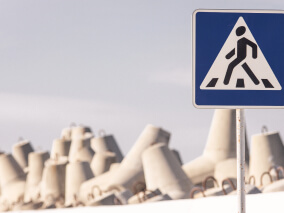
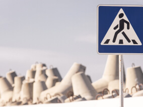

По опросам ВЦИОМ, 95% россиян мечтают куда-нибудь поехать,
но только 36% планируют провести отпуск в родной стране. Мол, чего мы тут, дома, не видели?
На самом деле, Россия — это целая вселенная с ласковым морем юга, густыми лесами Саян и суровыми льдами плато Путорана.
А ещё увидеть все эти красоты можно без миллионов на счету, загранпаспорта и многочасовых перелетов. Как, например,
Вера Башмакова — смелая молодая мама, которая взяла в охапку троих детей, усадила их в свою «Ладу» и проехала 20 тысяч километров
по родной стране. Мы выбрали и описали некоторые интересные места, достойные вашего отпуска.
Здесь, посреди лесов и песчаных дюн, вы сможете увидеть два водных горизонта — спокойного
Куршского залива с одной стороны и подёрнутого рябью волн Балтийского моря с другой.
Уникальная природная зона на краю российского анклава.
На этом Калининградская область не заканчивается.
Для путешественника и исследователя там же по соседству — самая западная точка России,
Балтийская коса, — и немецкое наследие россыпи небольших приморских городов.
Атмосфера здешних мест исключает суету, окуная в спокойствие природы и запах стального, прохладного моря.
Почти весь полуостров находится за Полярным кругом. Саамская тундра, от которой на юг —
тайга, а на север — Ледовитый океан, прикидывающийся Баренцевым морем.
Возможно, вы смотрели Звягинцева и даже слышали историю арктического фестиваля в Териберке.
Возможно, слово «Хибины» не осталось под снегом школьных воспоминаний об уроках географии.
Возможно, вы не интересовались пронизывающей земную кору сверхглубокой скважиной, а от апатитов вас давно накрывает апатия.
Но ваша мечта увидеть северное сияние начинает сбываться с билетом
в Мурманск.
Алтай — одно из красивейших мест в России.
В первую очередь из-за гор: если ехать вдоль хребта, вы увидите склоны, усыпанные соснами, горные реки и озёра.
А если вы откроете в автомобиле окна,
сможете познакомиться с невидимым чудом здешних мест — горным воздухом.
Климат на Алтае умеренный, поэтому ехать сюда лучше всего летом.
Так вы увидите всё разнообразие местной флоры и фауны.
По лесам Алтая бродят лоси, над хребтами летают орлы, а на равнинах пасутся косули.
И знаменитые манулы — тоже обитатели Алтайского края.
Всем известен Байкал как крупнейшее озеро
в мире. Многие также знают, что это самый большой источник пресной воды и одно из красивейших мест в России.
Конечно, это всё так. Но Байкал ещё идеальное место для соревнований по скийорингу.
Это такой вид спорта, когда лыжник привязывает себя
к мотоциклу, и тандем старается развить как можно бóльшую скорость на льду.
В марте 2019 года на фестивале «Байкальская миля» был поставлен мировой рекорд — 197.011 км/ч.
Сибирь заканчивается не на Урале, а в Карелии: образующая тайгу сибирская лиственница не растёт западнее Водлозера.
Зато здесь она вымахивает на 30 метров — леса карельских национальных парков из-за непроходимых болот никогда не знали топора.
Некоторым соснам уже больше чем полтысячелетия. Прикоснитесь к живому существу, видевшему солнце раньше, чем увидал его Иван Грозный.
В девственном лесу на сотню километров не встретишь тропы. А на редких тропинках деревья
в паре метров от земли помечены медвежьими когтями. Чтобы все знали, кто тут хозяин.
 
